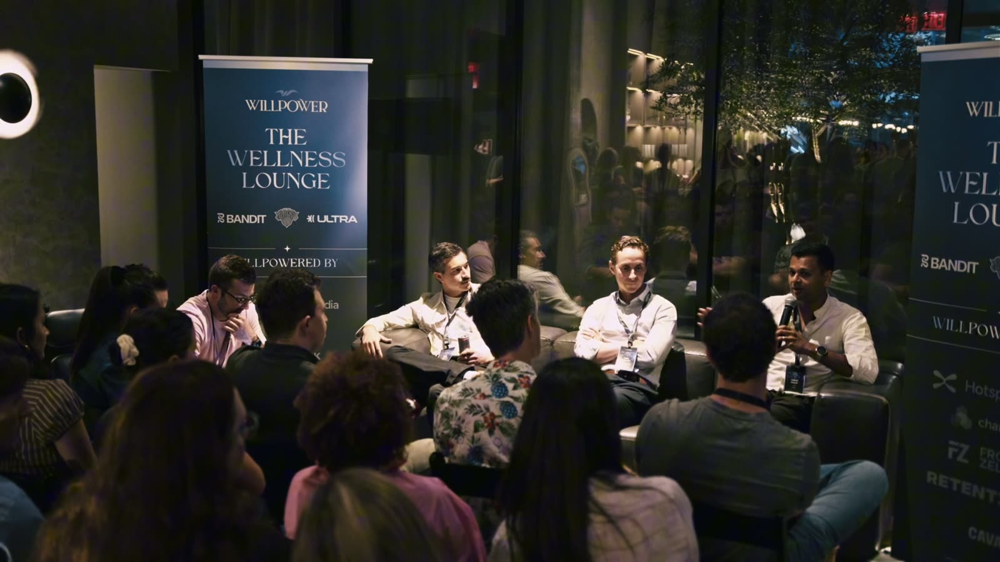
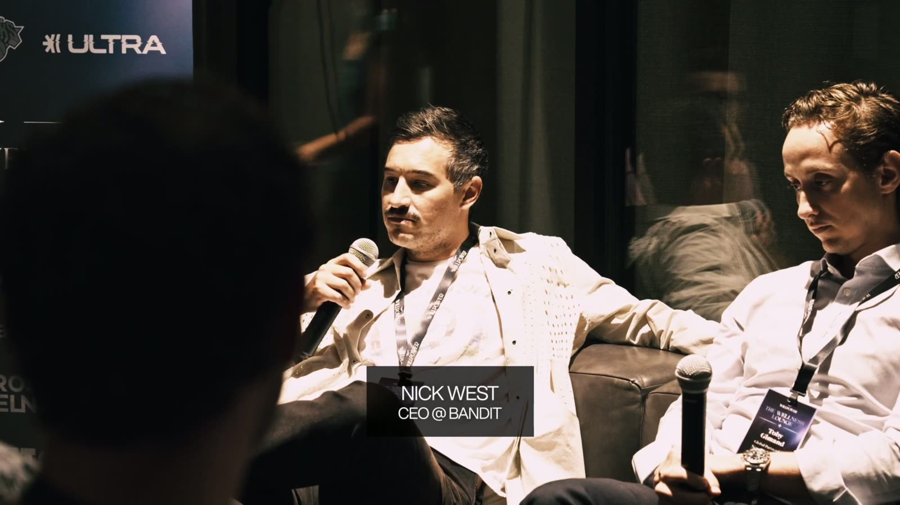
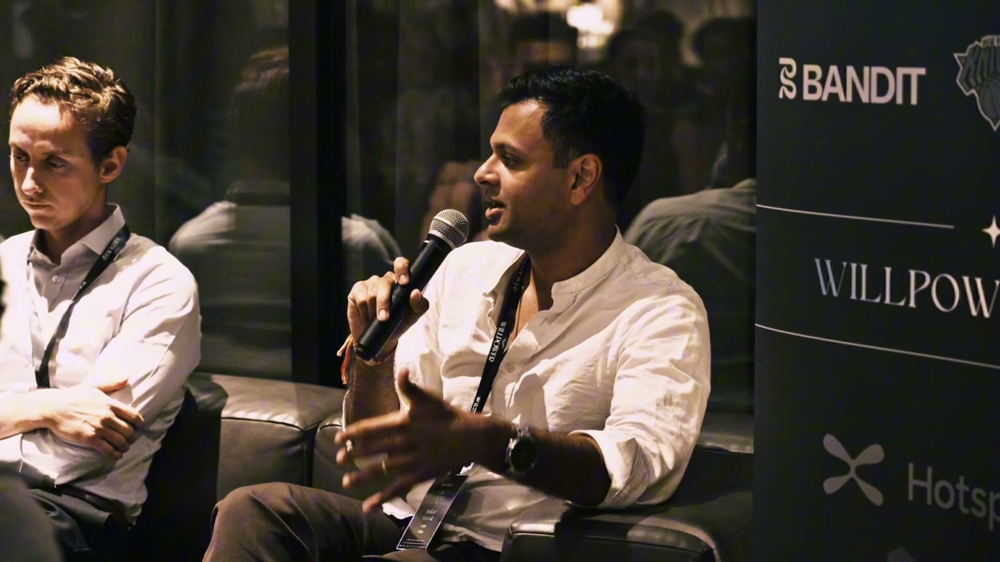
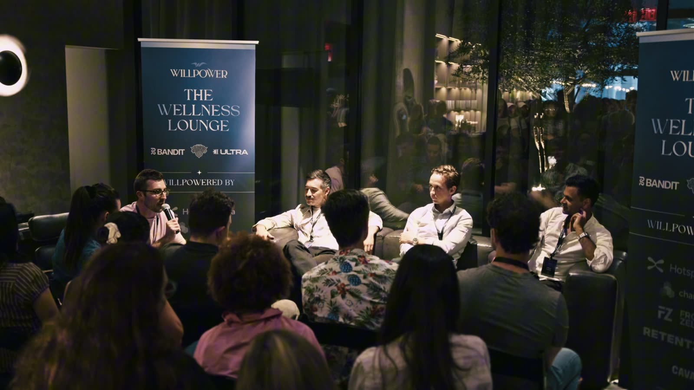

Three brands in the room, three totally different engines
Bandit grows because people were in the room. The Knicks grow because their grandfather was a fan. Ultra grows because the content is everywhere.
Same goal. Three engines that do not transfer.
Bandit Running
Community ledBorn on McCarren Park track in Brooklyn, built off the skate and surf brands the founders grew up with. The people who showed up are the growth engine.NY Knicks
Fandom led53 years, no title, still sold out. That audience got inherited. The job is not breaking it.Ultra
Content ledNational on day one, no local scene to stand in. Content does what a run club does for Bandit.I looked at the signups before we started. Roughly 80% of the room had flagged acquisition cost as the thing keeping them up.
These three had solved it three ways that do not talk to each other.

Nick spent $1M on a race instead of a media buy
Bandit started its events business on a $2,500 budget. Unsanctioned races, right outside the office.
The Bandit Grand Prix now runs about $1M top line. Second year!
Nick studied music festival economics to figure out how to do it without losing his shirt, then funded it the way a festival does (sponsors, tickets to racers, their own merch).
Here is the part I keep thinking about. A $1M media buy is $1M of selling. A $1M race is $1M of experience, and the people inside it do the distributing for you.
Nine laps. Closed course, indoor and outdoor, DJ going.
And Nick is in the venue building the thing himself so they can hire one less person until it is proven. That is the whole personality of the company right there.
"When you spend a million dollars on a media buy, everything that you're doing is selling."
Nick West, Co-founder, Bandit RunningPaid is an accelerant. It never starts the fire
Nick will not let a new customer meet Bandit through a performance ad. Ever.
First touch should be a long YouTube story about an unsponsored athlete going to the Olympics, or a marathon experience in real life. The ad shows up later, as the reminder.
Attribution goes fuzzy when you spend like that, so they watch blended CAC and run one test.
Are organic purchases growing faster than paid ones?
That is the whole test.
If paid ever wins that race, they are selling themselves more often than customers are telling their friends. Steal this one. It costs nothing to check.

Four years. Zero conversion rate tests
Not one CRO change to the website for the first four years of the company. Zero.
Every dollar that would have gone to testing button colors went into making people care.
He is honest that this was a stage call, not a religion. At $100M in revenue the math flips (half a basis point on a million sessions is real money, on ten thousand it is noise). Bandit does the optimization work now, and he gives AI the credit for making most of it automatic.
"If we get people so obsessed with the brand, they're gonna figure out how to find the checkout."
Nick West, Co-founder, Bandit Running
Ankur will not call it a cult yet
Ankur is CMO at Ultra, the biggest nicotine free pouch brand in the country. Founded last year. Already past 2 million cans sold. Ten plus years in CPG before this, including scaling Coterie.
He would not take the bait when I called it a cult brand. Respect.
Bandit is a cult brand. The Knicks are a cult brand. Twelve months in, his job is describing the thing while it gets built, not claiming the trophy.
Then he said the line that should scare a few people reading this.
"If you want a community two years from now, you kinda gotta think about it now."
Ankur Goyal, CMO, UltraWhat a content engine actually costs
Ankur put a real number on it, which almost nobody does in public.
Low six figures a month - agencies, production, headcount, partnerships.
That buys 600 to 700 pieces of content a month, and they expect to double it inside two months.
The structure is the interesting part. Influencers producing at volume, people on payroll who are good on camera, and deliberately expensive one-offs with Larry Wheels and Rampage Jackson (more than a brand their size should pay, and it breaks through anyway).
All of it lands in a pre and post production operation with fixed boxes to check.
Be creative about what goes in. Be an accountant about what comes out.
The vacation pack, and the layer nobody builds
Best story of the night was about diapers. Stay with me.
Coterie saw in their own data that their parents traveled way more than average. So they built the vacation pack: ship a box of diapers straight to your hotel, you cover the shipping.
Not a giveaway. Cheaper than checking a bag!
It came out of reading CX logs, not a strategy offsite.
Ankur's frame: most brands work the product layer and the brand layer, then skip the one sitting between them. The services you offer. Community is one of those. Content is one. A box of diapers waiting at a hotel is one.

MSG gets its own players one day a year
Toby sells partnerships across the Knicks, Rangers, Rockettes and MSG's concerts. Eight years at the NFL before that.
53 years without a title, and his point was that the rabid part of that fan base never depended on winning.
Then he named a constraint I had never considered.
Once a year.
MSG gets access to its own players for content exactly once a year. One eight hour shoot day. Everything branded comes out of that.
Which is why the growth is in creator programs instead. Their first ever beauty partner on the Knicks used the deal to host influencers: suites at games, shootaround access, a post game photo on the court. Things you cannot buy off the street.
He was also refreshingly blunt about why big properties move slow, and said the arrogance is real and not his alone.
"We're typically not ever first to do things, because we don't have to be."
Toby Gimand, Global Partnerships at MSGActing small on purpose
I asked Nick how Bandit stays cool while it scales. He gave me the line of the night, then the mechanic behind it.
The email list went from 5,000 to half a million. HALF A MILLION.
His answer is to ignore how much bigger that is and keep doing what worked at 140 fans, only better.
Concretely: after every single collection, 50 men and 50 women come into the Brooklyn store and tell them what they liked and what they did not. He says that never changes.
He also insists Bandit still has low brand awareness. Founders stop saying that right before they get comfortable, so I believe him.
"The fastest way to kill a cult is to try to grow it."
Nick West, Co-founder, Bandit RunningWhat to take home
- Run Nick's test on your own numbers tonight. If paid purchases are growing faster than organic ones, you are buying growth the brand has not earned.
- Bandit's event math only works with a near not-for-profit head on. Optimize the inputs that create real emotional engagement, and profitability shows up in later years or never.
- Ankur's service layer is the cheapest edge on this list. Read your CX logs, find what customers keep working around, turn it into an offer. The vacation pack came out of support tickets.
- Put a real number on your content operation before you judge it. Low six figures a month buying 600 to 700 pieces is the benchmark Ankur shared out loud.
- On traditional media Nick is bullish. Linear TV next month, radio maybe Q1. His rule on a small budget: the idea beats the budget. They ran a billboard that did not carry their own name.
- Scarcity of access is a strategy problem. MSG gets one eight hour day a year with its players and solved it by handing the storytelling to creators.
- Community takes years, so the decision happens now. That is the whole reason these rooms exist. Growth Through Community.